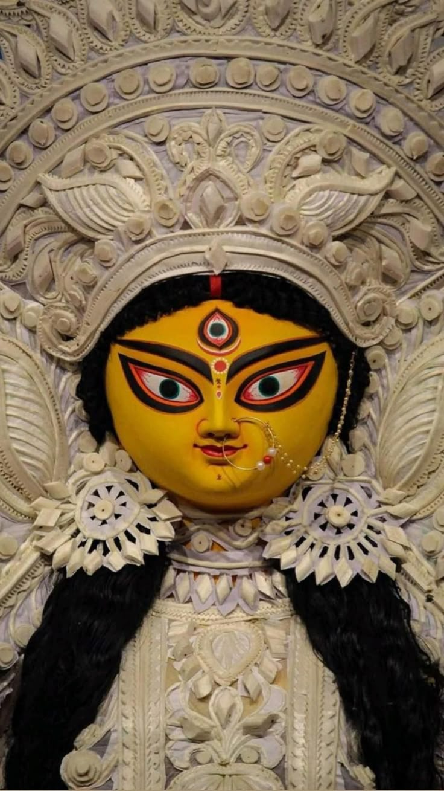
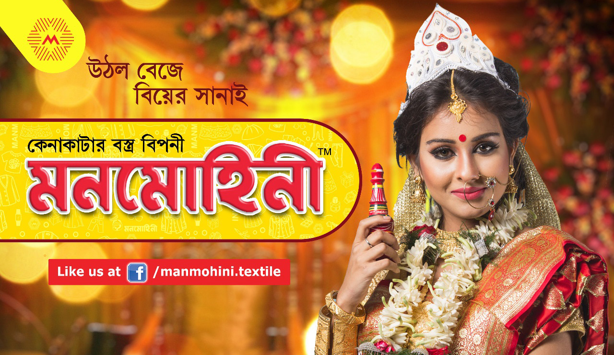

Festivals That Bring Us Together
Throughout the year, Protappur Baroari Durga Puja Committee organises religious, cultural and community events with devotion, enthusiasm and participation from people of Protappur and nearby villages.
A Tradition of Celebration
Our festivals are more than religious celebrations. They are occasions that bring families, devotees, elders, children and the wider community together.
Every celebration reflects the long-standing traditions and cultural heritage of Protappur.
From sacred rituals and devotional programmes to cultural performances and community service, every event is organised with the blessings of Maa Durga.

Our Annual Celebrations
Major religious festivals celebrated at Protappur Baroari Durga Puja Committee.
Sharadiya Durga Puja
The principal annual celebration of our temple, observed with traditional rituals, prayers, cultural programmes and community participation.
View Gallery
Kojagari Lakshmi Puja
A sacred celebration dedicated to Goddess Lakshmi, observed with devotion and traditional worship.
View Gallery
Sri Rama Navami
A devotional celebration honouring Lord Sri Rama through prayer, worship and community participation.
View Gallery
Kali Puja
A traditional devotional observance celebrated with prayers and community participation.
View Gallery
Cultural Programmes
Cultural performances, devotional music and community programmes organised during festivals.
Explore Gallery
Community Activities
Various community-oriented activities and initiatives organised throughout the year.
Learn MoreSharadiya Durga Puja
The Heart of Our Heritage
Sharadiya Durga Puja is the most significant annual celebration organised by Protappur Baroari Durga Puja Committee.
Devotees from Protappur and nearby areas come together to offer prayers, participate in rituals and seek the blessings of Maa Durga.
The celebration also becomes a gathering point for families, friends and members of the community.
Beyond Religious Celebrations
Our events also encourage cultural participation, community bonding and social harmony.
Upcoming Events
Festival dates and programme schedules will be announced by the committee through our official channels.
Festival Schedule
Detailed dates, puja timings, cultural programmes and other event information will be published here when officially announced.
Contact CommitteeOfficial Updates
Follow our official Facebook and YouTube channels for the latest announcements, photos, videos and live updates.
Relive Our Celebrations
Explore photographs and videos from our festivals, temple celebrations, cultural programmes and community events.
Experience Our Festivals In Person
We warmly welcome devotees, visitors and cultural enthusiasts to Shri Shri Durga Temple, Protappur.